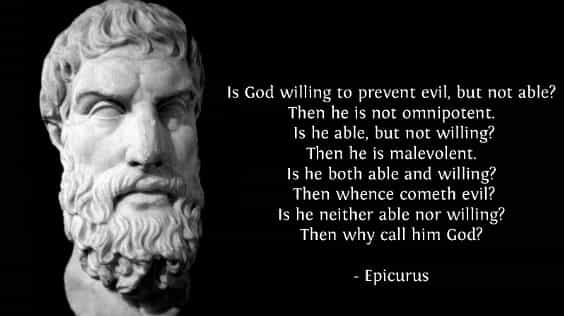

< < < Back
Learn How To Think Instead Of Believing In Lies And Conspiracy Theories – Return Of Kings
Belief is only useful where facts do not exist. Where facts exist, they are all that matter when attempting to assess a situation. Anyone who latches onto a story that happens to fit a smaller set of facts while ignoring the possible implications of other facts is limiting their reasoning to comfortable stories rather than opening their mind to the nuance of reality. Cultivating conspiracy theories is worse than beta, it’s worse than white knighting—it is one step away from being a complete tool.
Let me restate myself for emphasis, you’re a moron if you decide to ignore facts that are inconvenient to your preferred narrative so that you can maintain a comfortable or ego-invested lie. This is the foundation of red pill truth. Don’t give up your reasoning and attention to detail when the first beta masquerading as a man tries to claim that something is a hoax or false-flag event. This isn’t much different than listening to your favorite female oneitis target tell you how to be attractive for her when you’re 18 years old. Sure, it feels good when a woman tells you how to be attractive to women, and her story feels like it fits the facts, but anyone who has digested the red pill knows that situation is like drinking poison.
Just because you believe the world is ending, doesn’t mean that there’s a US-government-generated earthquake targeted at you specifically. The conspiracy theorist mindset is wholly narcissistic, unable to accept that entirely bad situations can occur purely by random chance or (as is more often the case) by absolute human incompetence. This way of thinking is actually attractive to the remnants of the human brain that are primal, the old, lizard brain that tells us to go find a woman to have sex with. Worse yet, it really strokes our primitive egos when we feel like we know something that other people do not. These lines of thinking are attractive because they are extremely useful for keeping us safe in situations that could potentially go out of control quickly. Yet, this form of thought is an unmitigated disaster when all that is required is a little reading, thinking, and acceptance of all facts available for a rational explanation to present itself.
The human mind wants to believe something
If you’re walking alone down a dark alley in a seedy part of a large modern city in the middle of the night, would you consider getting mugged to be a part of a grand conspiracy against you? Probably not, but you would be hard-pressed to explain exactly what circumstances led to your unfortunate encounter. In fact, you would have no facts on your mugging save the visual identity of your attacker at best. In this situation your mind would be free to come up with all kinds of stories that fit your limited set of facts. Yet you never see humans attribute muggings to the NSA, or the CIA, or any other clandestine organization of the world’s governments. Why is this? Because our minds (for at least some of us) can accept the fact that we placed ourselves into a vulnerable situation and someone else took advantage of us. Our shared experience or human consciousness lets us understand that large cities have lots of people who want to do unsavory things to other people if they feel they can get away with it.
For centuries, sailors reported horrific events that led to the rapid sinking of ships. These stories literally led to areas on maps with the “there be dragons here” art. Sailors experienced horrible situations at sea, and the only explanation that made sense was a fantastic story completely outside of their own experience that happened to fit a portion of the facts.
Sailors at sea still experience those same situations that old-wooden ships experienced centuries ago, but with the benefit of science and modern technology, we now understand what a lot of these freak random events actually are. One of them is now called a “White Squall”. It is nothing more complicated than a sudden, violent burst of wind that would blow ships on their side within seconds, often accompanied with enough moisture as to create sideways-rain. Back when all ships were powered by huge sails on tall masts, this event would naturally lead to the sinking of the ship and significant loss of life, if not the entire crew. In those days, these events must have seemed like some gigantic beast in the sky literally just blew their ship down, as they had no experience with how random weather at sea can seem. These days, with scientific investigation, we know these events to be the result of a sudden microburst.
Also on the list of things sailors experienced centuries ago, but had no rational explanation for, were rogue waves. Rogue waves could be deadly to any vessel not sturdy enough and without enough ballast to keep it upright. For old wooden ships with no deep heavy fin keel, this type of wave could literally turn the ship upside down, never to recover. This must have seemed like an act of God or sea monsters to sailors centuries ago. However today we know rogue waves to simply be an event that occurs relatively randomly, usually a result of the confluence of wind and ocean energy, along with a change in sea floor height. Sailors today know what they are, and they know where to generally look for them. Back then, it was some grand act of God or sea monsters acting against the sailors.
The human mind cannot stand an information vacuum
Where our experience can’t inform us, we seek knowledge, and where knowledge fails us, we make shit up. This is just a truth of being a human being. Your brain cannot handle its own ignorance, and it hungers for understanding everything around it so badly that it will supplant rational understanding with your own imagination if you’re not careful. This means that you need to learn how to use your brain properly, or you will literally do harm to yourself by believing bullshit. If you want to be a good example of masculinity, you cannot succumb to your animal brain when your life is hit with random events. By all means, let the animal brain take over and fight for your life if someone tries to murder you, or if you’re about to have sex. But on a daily basis, your job as a masculine man is to remain rational and look at available facts when interpreting the world. Let the women succumb to fear, paranoia and animal thinking if they feel they must.
Science to the rescue
What pulled humanity out of this primitive set of behaviors was the slow construction of the scientific method from early thinkers, to philosophers, to the modern physicist/mathematician. Many people today regard science as some kind of ivory-tower of “authority” that is fallible just like the church. That, my friends, is bullshit. Science is a method of thinking, not a set of beliefs or a structure of authority. The authority that people practicing this method have does not venture far from their own expertise (though many of them would like people to think otherwise—smart people have egos too). Yes, ivory towers of over-extended thoughts cloaking themselves in the “guise of science” do exist in our modern world, but science is not a “gospel” over which only certain people have ownership.
Men need to learn the basics of this method if they’re going to avoid sounding like a moron. Science is something you as a man need to practice in your daily life. That doesn’t mean pulling out fancy electronics or mixing chemicals in a lab—it means accepting all facts available to you and constructing a proper narrative that is not falsified by any fact you currently have. Again, that means looking at all facts available, and building a story of reality that is not falsified by any available fact. If a single fact contradicts your story, you must change your story.
Arthur Conan Doyle understood this well enough to create a world-famous fictional character who thought this way instinctively. How embarrassing that we still have people on the internet willing to ignore facts so they can believe their fantasy or flaunt the empty backing for their intellectual ego.
The scientific method could be defined like this:
1. Define a question
2. Gather information (make observations of reality)
3. Create a possible explanation
4. Test your explanation with more observation of reality (for a lab, this means experimentation)
5. Analyze your new observational data. Accept any failure of your own ideas to match reality.
6. Re-interpret and draw your (new) conclusions.
That’s a simplification for the masses, but just as useful for day-to-day thinking. The hardest part of that process is defining a good question. Any scientist worth their salt knows that coming up with a good question is actually excruciatingly hard. Children are actually better at questioning things than adults are, but alas they do not have the understanding of their universe from which to spring into useful questions.
There have been many thousands of scientists throughout history, who while having the knowledge and experience to perform very complicated analysis, were unable to formulate the right question, and thus their work was not focused on the actual problem they meant to try to address. The rest of that process is easy by comparison, but no less important in arriving at a proper understanding of your world. If you’re going to be a man, this should be your default way of dealing with new information. When you stray from this method is when you get yourself stuck in pretty little lies.
This method is not a method for discovering anything. It will not make you creative at all. What it will do is prevent you from believing bullshit. It will keep your thoughts tied to reality so that whatever creativity or ambition you have, it will not suffer from misdirection.
Go forth and use it every day
The beauty of this method is that when new facts arrive at your doorstep you have a method for interpreting them and altering your perception of reality. The real difficulty is in imprinting this method into your thought pattern such that you never skip steps when considering the events around you. In a perfect world, you would have been taught this method from a young age, your fathers and teachers would have taught you how to think. Learning how to properly think, how to most efficiently use both your human reasoning and imagination is the most important skill any man will learn, bar none.

I am not saying you should replace your passion with some kind of caricature of Mr Spock. What I’m saying is that your passion is most useful when it exists in a mind that is not polluted with false perceptions of the world around it. In order to achieve that, you must learn how to think and reject lies when you see them. This requires elements of the scientific method, of testing your perception of the world and adapting to reality.
Epicurus was a good example of a man who understood that life was mostly about pursuing your passion, but that your passions can not be experienced in their fullness without your mind as a healthy ally in interpreting what you experience. I would recommend reading some of what that ancient man had to say.
We talk about learning game in the manosphere, but the dirty secret is that game is not a specific recipe—there are no magic words that will attract any woman to any man. Learning game involves utilizing a method of adapting your behavior to the world around you. How can you expect to do this if your thinking habits involve holding on to bullshit?
The specific steps of reasoning you’ll have to go through to develop your game will in no way be identical to anyone else. You will require a method of observing and adapting your interpretation of reality. In analyzing your approaches, your encounters, and all the social situations you put yourself in, you will need elements of the scientific method to adapt yourself to what works for you. Without practicing this method you will get stuck with thoughts that do not conform to reality. When you find yourself repeating old bullshit thoughts, believing in fringe conspiracy theories, or altering your behavior to match pretty little lies, that is when other people will start regarding you as a lesser man. Don’t be that lesser man, keep your wits about you and question your reality when the facts change.
Read More: Why You Should Learn Latin


{kind=link}